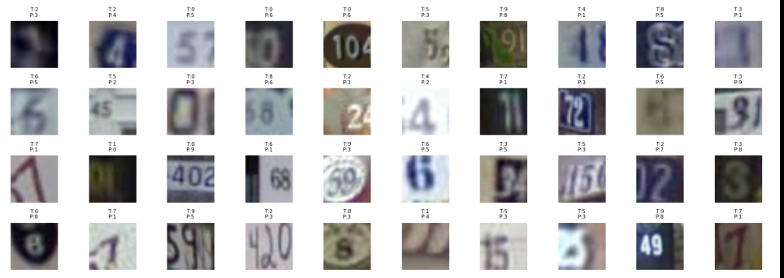

1 convolutional stage
Shallow CNN
Conv stage32 filters
Dense layer: 128 units · Dropout: 0.5
83.8%Validation accuracy
1.05MParameters
Computer Vision · Model Optimization
Architecture search, regularization, and error analysis for a compact convolutional vision model operating on noisy, low-resolution imagery.
Real-world visual inputs are rarely clean. The central problem is to learn representations that remain reliable under blur, clutter, low contrast, partial occlusion, and competing visual structures.
The input images are small RGB crops collected from street-view imagery. They contain illumination variation, neighboring objects, background structure, and ambiguous local patterns.
Rather than treating this as a simple classification exercise, the project focused on the model-design question: how much performance can be gained through architecture choice, regularization, and training control without increasing model size?
The final CNN was evaluated against classical machine-learning baselines developed within the team.
The CNN produced the strongest test accuracy and weighted F1, reflecting the advantage of hierarchical feature learning on spatial image data.
I varied convolutional depth while keeping the dense layer and dropout setting fixed, then compared validation accuracy against total parameter count.
The search moved from one to three convolutional stages: [32], [32, 64], and [32, 64, 128]. The goal was not simply to make the network deeper, but to test whether additional hierarchical feature extraction improved generalization efficiently.
The report attributes the parameter reduction to progressively smaller spatial dimensions after pooling, which reduced the size of the downstream dense computation.
Dropout and weight decay were isolated to determine which regularization choices actually improved generalization.
| Configuration | Dropout | L2 Weight Decay | Validation Accuracy |
|---|---|---|---|
| No regularization | 0.0 | 0 | 91.0% |
| Moderate dropout | 0.3 | 0 | 92.4% |
| Stronger dropout | 0.5 | 0 | 91.8% |
| Dropout + L2 | 0.3 | 1e-4 | 92.3% |
| Stronger dropout + L2 | 0.5 | 1e-4 | 91.9% |
Moderate dropout (p = 0.3) produced the strongest validation result. Adding L2 regularization did not provide a measurable gain.
Early stopping prevented unnecessary optimization after validation performance stopped improving, while preserving a comparable validation result.
The remaining errors are concentrated in genuinely difficult visual cases: blur, low contrast, partial occlusion, cropping, overlapping digits, and ambiguous shapes.
Qualitative inspection shows that the model performs reliably when the target is clear and isolated, but degrades when context and image quality make the 32×32 crop ambiguous.
The confusion pattern is also systematic rather than random. Visually similar classes account for many mistakes, especially 2→3, 5→3, and 0→6/9.

The benchmark dataset appears here as the experimental substrate rather than the identity of the project.